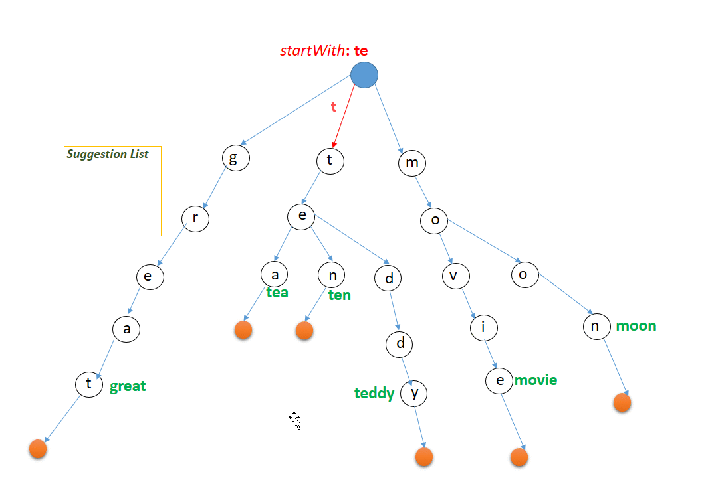

Search Query Completion
Now, you might not always find something you'll like in the recommendations. So your next move would be to search up something that you have in mind or that somebody else might have recommended to you. But while searching, typing the entire title might not be convenient as titles can sometimes be long or maybe you can't recall the exact title.
The autocomplete feature comes into play in this case. For example, suppose you want to search up "Stranger Things" and start typing "Stran..", Netflix will finish the query instantly and accurately most of the times. This can be achieved with the following data structures and algorithms:
1. Trie for Prefix Lookup
Structure: Build a Trie of all titles. Each node holds:
Query: Go down the Trie in O(L) time (L = length of your input). Once we reach the node for "Stran", we immediately grab its cached top-K list, a small, pre-computed array stored at each Trie node that contains the K most popular titles you can complete from that prefix.

Show Trie Python Code
class TrieNode:
def __init__(self):
self.children = {}
self.is_end = False
self.titles = []
class Trie:
def __init__(self):
self.root = TrieNode()
def insert(self, title: str):
node = self.root
for ch in title:
node = node.children.setdefault(ch, TrieNode())
node.is_end = True
node.titles.append(title)
def _collect(self, node, prefix, results):
if node.is_end:
results.extend(node.titles)
for ch, child in node.children.items():
self._collect(child, prefix + ch, results)
def prefix_search(self, prefix: str, limit=None):
node = self.root
for ch in prefix:
node = node.children.get(ch)
if not node:
return []
results = []
self._collect(node, prefix, results)
return results[:limit] if limit else results
# Example usage:
titles = ["Stranger Things", "Stranger Tales", "String Theory", "Strange Planet"]
trie = Trie()
for t in titles:
trie.insert(t)
print("Trie prefix 'Stran':", trie.prefix_search("Stran", limit=3))
# → ['Stranger Things', 'Stranger Tales']
2. BK-Tree for Typo-Tolerant Search
When the Trie's prefix hits come up short or if you accidentally mistype it as "Straneger Things", Netflix needs to recover with appropriate results rather than show "No results found."
BK-Tree is a data structure used for efficient searching of words that are close to a target word in terms of their Levenshtein distance (or edit distance). It is a tree-like data structure, where each node represents a word and its children represent words that are one edit distance away.
- Each insertion starts at the root node and progresses down the tree by determining the Levenshtein distance between the word being inserted and the word associated with the current node. If d = 0, it's a duplicate—stop. Otherwise, follow (or create) the child edge labeled d and repeat.
- The search algorithm for a BK-Tree starts at the root node and progresses down the tree based on the Levenshtein distance between the target word and the word associated with each node. If d ≤ D, add node.word to results. Recurse only into children whose edge-label k satisfies |k − d| ≤ D—pruning irrelevant subtrees.
Show BK-Tree Python Code
# Helper: Levenshtein edit distance
def edit_distance(a, b):
n, m = len(a), len(b)
dp = list(range(m+1))
for i in range(1, n+1):
prev, dp[0] = dp[0], i
for j in range(1, m+1):
cur = min(
dp[j] + 1, # deletion
dp[j-1] + 1, # insertion
prev + (a[i-1] != b[j-1]) # substitution
)
prev, dp[j] = dp[j], cur
return dp[m]
class BKNode:
def __init__(self, word):
self.word = word
self.children = {} # key: distance, value: BKNode
def bk_insert(root, word):
node = root
while True:
d = edit_distance(word, node.word)
if d == 0:
return # already present
if d in node.children:
node = node.children[d]
else:
node.children[d] = BKNode(word)
return
def bk_query(node, query, D, results):
d = edit_distance(query, node.word)
if d <= D:
results.append(node.word)
for k, child in node.children.items():
if abs(k - d) <= D:
bk_query(child, query, D, results)
# Build BK-tree
titles = ["Stranger Things", "Stranger Tales", "String Theory", "Strange Planet"]
bk_root = BKNode(titles[0])
for t in titles[1:]:
bk_insert(bk_root, t)
# Fuzzy search example
fuzzy_results = []
bk_query(bk_root, "Straneger Things", D=2, results=fuzzy_results)
print("BK-Tree fuzzy:", fuzzy_results)
# → ['Stranger Things', 'Strange Planet']
Worst-case Time: O(N), if many titles are within distance D, but in practice D is small (1–2).